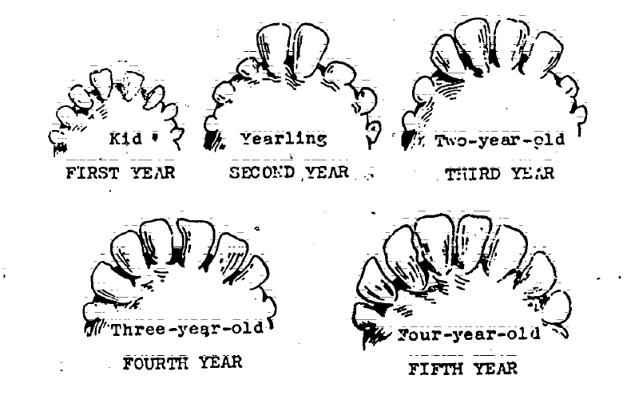
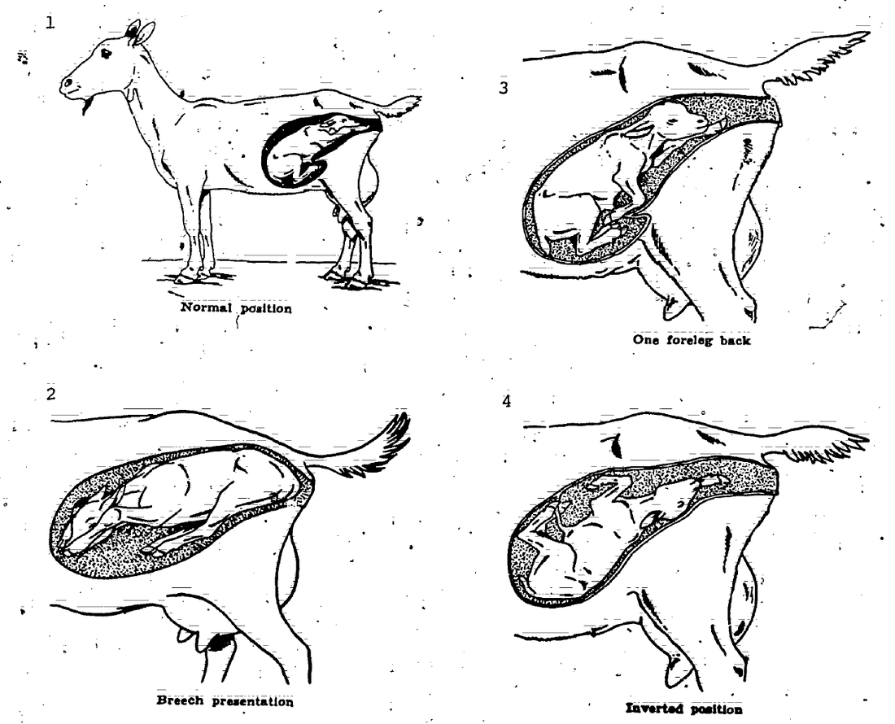
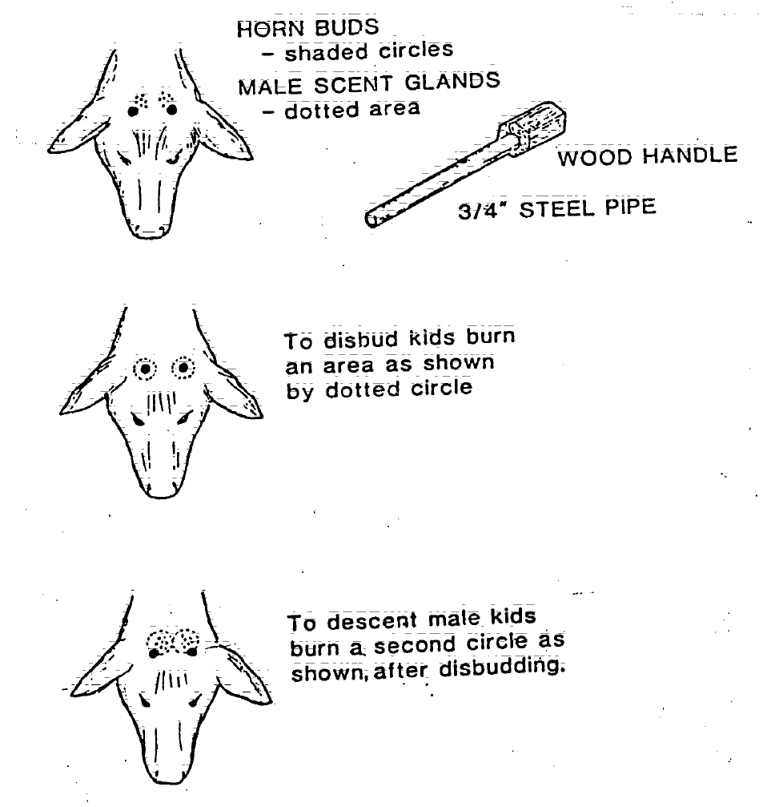
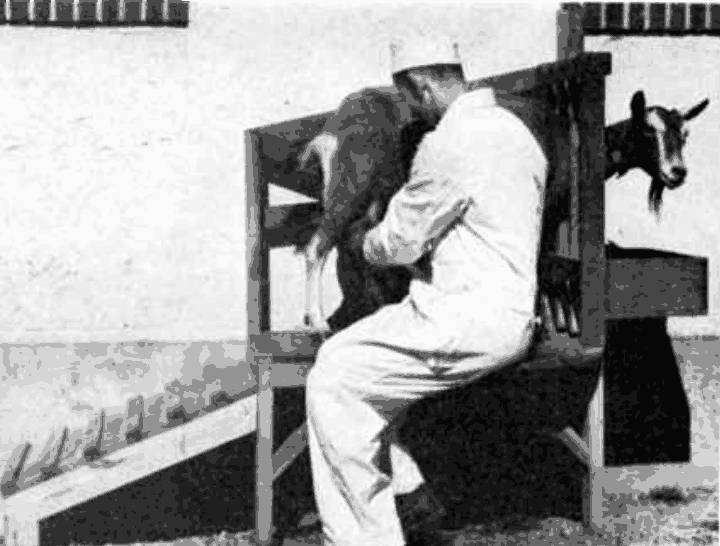
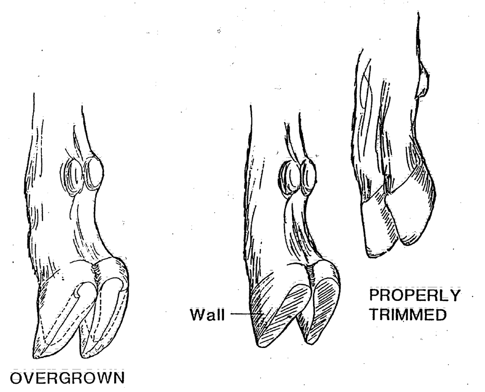

Guides › Animals · Emergency · Index A–Z
How to keep goats with no feed store, no vet and no fridge: choosing milk and meat goats, fences and sheds that stop cougars, feeding on browse and hay, the local plants that kill goats, selenium and other minerals, kidding and kid care, castrating and disbudding, daily milking, hooves, worms, sickness, humane slaughter and butchering, hides and manure, and using goats to clear brush and keep fire breaks open. What to do with the milk once it is in the pail (cooling, pasteurizing, butter, yogurt, cheese) is in the Milk, Butter & Cheese guide. The goat books are in Animals\Goats-Sheep, with no-vet medicine in Animals\Veterinary, slaughter in Animals\Cattle-Horses-Pigs, predators and fire in Animals\Planning-Predators-Toxic-Plants, and poisonous plants in Wild-Plants. Sheep books are used where goats and sheep share a problem, and the guide says so.
The short version
- Shut goats in a shed or barn every night — cougars (ODFW, p. 2). No barbed wire; plain field fence traps horned heads (OSU EC1646, p. 1).
- Never feed hedge or garden trimmings. Yew kills before any sign shows; goats like the leaves of rhododendron, azalea and laurel, which poison them (WSU, p. 2; p. 15).
- Oregon is short of selenium. Keep a covered selenium goat mineral out all year, and never let sheep eat goat mineral — its copper poisons them (OSU EM 9094, p. 2; UF VM271, p. 2).
- Change feed slowly, over 7–10 days. Bloat, grain overload and enterotoxemia kill in hours (Raising Healthy Sheep, p. 95).
- Colostrum within 30–60 minutes, at least 10% of body weight; a kid colder than 99 °F must be warmed before it is fed (KSU MF3689, p. 11).
- Deworm only the goats that need it (pale eyelids; FAMACHA check every 2–4 weeks). Dewormers will run out, and overusing them breeds worms they can't kill (UF VM271, p. 2).
- Some goat diseases infect people: CL pus, sore-mouth scabs, aborted kids and afterbirth. Wear gloves; pregnant women stay away from abortions and hard births (Raising Healthy Sheep, p. 114; KSU, p. 4).
- A fair doe gives about 1½ quarts a day for 10 months. A family of four needs about 3 does, a shared buck and 1–2 tons of hay a year (see "How many goats feed a family").
A goat "will supply sufficient milk for the average family and can be kept where it would be impossible to keep a cow"; 6 to 8 goats eat what 1 cow eats (USDA FB 920, p. 3; p. 25). Goats are "the hardiest of the domesticated ruminants" and give milk, meat, mohair and leather (Peace Corps Vol 4, p. 390).
| Breed | Best for | What the books say |
|---|---|---|
| Saanen | Milk | Largest Swiss breed, white. Does about 120 lb, bucks 185 lb. The USDA herd averaged 5.6 lb (about 2½ qt) a day for 8–10 months, about 3.5% butterfat (FB 920, p. 11; p. 13) |
| Toggenburg | Milk | Brown, light stripe down each side of the face. 5–6 quarts a day in Switzerland; a few US does averaged 4–5 quarts for 8–10 months; the USDA herd 4.1 lb (about 2 qt) at about 3% fat (p. 14) |
| Nubian | Rich milk, meat | Long drooping ears, Roman nose. Milk highest in butterfat — best for butter and cheese — but less of it; "less hardy than the leading European breeds"; bucks smell less (pp. 15–16) |
| Alpine | Milk | Large, "quite hardy," heavy milker; any color (p. 17) |
| Common "American" goat | Meat, brush | Short-legged, "meaty," very prolific, horned; short lactation, small teats. A good base to cross with a dairy buck. Mexican goats show Spanish blood (p. 19) |
| Boer, Kiko, Spanish | Meat, brush | The common modern meat breeds. No book on the drive covers them; a dairy × meat cross gives milk and heavier kids (rule of thumb) |
| LaMancha, Nigerian Dwarf | Milk | Newer breeds; the Nigerian Dwarf is small and eats less (rule of thumb) |
Buying a goat: bright and alert, clean rear, walks freely, clear eyes, teeth that meet the pad, normal hooves, knees not swollen (CAE), no lumps behind the ears or under the jaw (CL) (Raising Healthy Sheep, pp. 28–29). Avoid any herd with abscess problems (No Animal Doctor, p. 239). A milking doe should have an udder "very much reduced when empty" and teats big enough to milk; a fat doe in milk is "a strong indication that they are not good producers" (FB 920, pp. 21–22). Age: one pair of big lower front teeth at about 1 year, two at 2, all four pairs at 4 (No Animal Doctor, p. 54); goats are in their prime at 4–6 years (FB 920, p. 23). Keep new goats apart for 30 days and deworm them first (Raising Healthy Sheep, p. 103; p. 123).

Count the big lower front teeth: one pair at about 1 year, two at 2, three at 3, all four pairs at 4 to 5 (Peace Corps Vol 4, p. 409).Fences (OSU EC1646, p. 1; FB 920, p. 35): woven or welded wire about 48 inches high, stock panels, high-tensile or electric. No barbed wire — it "can cause severe injury." Field fence traps horned heads; netting entangles goats, so use it only where you watch them. Electric works once goats are trained: two hot wires held mature does but not kids, and "the goats will soon know it" when the charger is off. Wrap young trees in wire (FB 920, p. 25). Tethering: a chain with a swivel at each end, away from trees, shade and water in reach — but a tethered goat can't run from a predator (Peace Corps Vol 4, p. 416).
Shelter (EC1646, p. 2; FB 920, p. 9): a three-sided shed with clean bedding, room for all, and fresh air without drafts — damp air and ammonia cause pneumonia. "Goats must be kept dry and out of cold winds" (FB 920, p. 26). Plan about 15–20 sq ft of shed floor per adult, plus a separate buck pen (rule of thumb). Add something safe to climb (climbing structure), a stand or chute to hold one goat, and kidding pens made from hurdles. Store hay in a separate building from the goats (PNW783, p. 8).
Predators: dogs, bears and coyotes kill adult sheep and goats; foxes and hawks take young ones. Shut the herd in a predator-proof pen near the house at night (Raising Healthy Sheep, pp. 132–133). Cougars: "Fence and shelter livestock. Move them to sheds or barns at night" (ODFW, p. 2). Guardian dogs, donkeys and llamas protect a herd (EC1646, p. 1; guard dog, llama). Mark every goat: ear notches can be read from a distance; a tattoo inside the ear is permanent (FB 920, p. 33).
📚 Go deeper: USDA AIB 588 Livestock Guarding Dogs — choosing and raising a guardian dog; FB 920, p. 9 — plan of a small goat barn.
Goats browse: they prefer "leaves, twigs, and weeds to grass" (FB 920, p. 25), pick the best part of each plant, and walk twice as far in a day as sheep or cattle (Peace Corps Vol 4, pp. 392–393). But "a doe cannot be expected to produce milk at her maximum level" on browse alone: she needs legume hay or pasture plus grain (FB 920, p. 26).
How much (FB 920, pp. 25–26):
Here in the valley (rule of thumb): pasture browns from June to the October rains and winter is mud, so plan hay for both. Browse: blackberry, poison oak, willow, maple and oak leaves — "goats will browse woody vegetation like blackberry and poison oak" (OSU EM 9184, p. 14). Oak: goats are "less susceptible than cattle," and leaves lose their poison as they mature (AIB 415, p. 79); young leaves, buds and green acorns are the risky part (WSU, p. 27), so make oak part of the diet, not all of it (rule of thumb). Raked leaves are poor winter feed, only for a shortage (FB 920, p. 26). Poison oak rides on goats: the oil on their coats reaches whoever handles them, so wash goats and clothes with soap and water, and never burn poison oak — the smoke can put people in the hospital (OSU PNW 108, p. 4).
Feeding safely: change any feed over 7–10 days; keep hay out when they graze fresh alfalfa or clover so hungry goats don't gorge; keep grain locked up (Raising Healthy Sheep, pp. 95–96). Let them drink before feeding (No Animal Doctor, p. 207). Feed in racks, so goats eat up off the ground and can't stand in their feed (UF VM271, p. 2).
📚 Go deeper: FB 920, pp. 25–26 — rations for bucks, does and kids; Raising Healthy Sheep, p. 45 — feeding through breeding, pregnancy and milking.
📷 Not sure what's growing in the pasture? Photograph it with the plant identifier (under Tools): it suggests a name and flags poisonous groups. Then check that name against this list.
Most poisonings happen when goats are hungry, moved onto new ground, short of water, or out in early spring when poisonous plants are the only green ones; for most there is no treatment (AIB 415, p. 11; Raising Healthy Sheep, pp. 96–97). Keep goats fed and watered, and walk new paddocks before you turn them in. The "where" column is local knowledge (rule of thumb).
| Plant | Where | What happens |
|---|---|---|
| Western azalea, rhododendron, laurel | Creeks, serpentine meadows; gardens | "Leaves and stems are attractive to goats." Drooling, vomiting (rare in goats — a red flag), bloat, tremors, collapse; activated charcoal may help (WSU, p. 15) |
| Pacific yew, garden yew | Shady creek forest; hedges | "Death may be so rapid that signs ... may not have time to develop" (AIB 415, p. 113); hedge trimmings (WSU, p. 2) |
| Oleander | SW Oregon yards | All parts very poisonous (OSU, p. 12), fresh or dry; even its smoke (WSU, p. 3) |
| Chokecherry, wild cherry, cherry laurel | Fencerows; wilted, frosted or fallen branches | Cyanide: gasping, bright red blood, death in minutes (AIB 415, p. 26; WSU, p. 1) |
| Water hemlock, poison hemlock | Ditches, creek banks | Tremors, convulsions, death within hours; water hemlock roots are worst (WSU, pp. 12–13) |
| Lupine | Dry hillsides | Seeds and young plants; the poison passes into milk and can cause birth defects in people (WSU, p. 15) |
| Death camas | Spring meadows | One of the first green plants in spring; all parts toxic (WSU, p. 3) |
| Bracken fern | Woods edges, burns | Bleeding and bloody urine in ruminants; also in hay (WSU, p. 11) |
| Foxglove, larkspur | Gardens; escapes | Heart poisons, fresh or dried (WSU, p. 28; p. 24) |
| Tansy ragwort, St. Johnswort | Pastures, roadsides | Ragwort: slow liver damage, fresh or in hay (WSU, p. 21); goats resist this kind of liver poison better than cattle (AIB 415, p. 43). St. Johnswort: sunburn-like sores (WSU, p. 26) |
| Nightshade, green potato, tomato vines | Gardens, compost piles | Solanine: drooling, colic, paralysis (WSU, p. 21) |
| Elderberry leaves, milkweed, buttercup | Moist ground, ditches | Gut poisoning; milkweed hits the heart (WSU, p. 29; p. 31; p. 26) |
| Pigweed, lambsquarter, dock | Garden weeds | Nitrate or oxalate poisoning, worst in drought (WSU, pp. 4–5; p. 30) |
📚 Go deeper: WSU Selected Poisonous Plants of the PNW — photos and signs; USDA AIB 415 — western poisonous plants in color. The Horses guide has photo pages for tansy and the hemlocks.
Selenium (OSU EM 9094, pp. 1–6):
Copper: goats need it; sheep are poisoned by it. Copper oxide wire particles help control barber pole worm in goats, but "there is a concern for copper toxicity in sheep" (UF VM271, p. 2); pig feed can hold enough copper to poison sheep (No Animal Doctor, p. 74). Never feed goat mineral to sheep, and don't feed goats a low-copper sheep mineral (rule of thumb). The drive has no map of copper in Oregon soils; a goat with a faded, rough coat may be short of it (rule of thumb).
Iodine: kids born dead or weak with a swollen neck (goiter) mean iodine shortage. Give pregnant does iodized or trace-mineral salt; if you have none, mix 2.2 g of potassium iodide into 10 kg of salt (No Animal Doctor, p. 282; p. 329). Calcium and phosphorus: grain is high in phosphorus, legume hay in calcium; keep the diet near 2–3 parts calcium to 1 of phosphorus against urinary stones in bucks and wethers (Raising Healthy Sheep, p. 94). On lush spring grass, offer hay too, against grass tetany (p. 92).
📚 Go deeper: OSU EM 9094 — normal blood selenium for goats (170–300 ng/mL); salt vs injections vs selenium-fertilized pasture.
| What to know | |
|---|---|
| Heat | Regular September–January, weak January–March, rare in spring and summer. Every 18–21 days; lasts 24–36 hours. Tail shaking, bleating, swollen vulva, less milk (FB 920, p. 23; Peace Corps Vol 4, p. 419) |
| Breeding | Wait about 12 hours after you see heat; for more twins breed again 24 hours later; breed in the cool of the day (Peace Corps, p. 419) |
| First breeding | Not before 7–8 months (Peace Corps, p. 419); FB 920 waits until 15–18 months, or 12–15 if well grown (p. 23). Breed a doeling her first fall only if she is big; otherwise wait a year (rule of thumb) |
| Gestation | 146–152 days (about 5 months); twins usual, triplets common; 168 kids per 100 yearling does, 196 per 100 mature does (FB 920, p. 24). Breeding Sep–Nov = kids February–April (arithmetic) |
| The buck | "Half the herd": pick one from a doe that milks long (p. 21). A yearling covers 25 does, a mature buck 40–50 (p. 23). House him away from milking does — his smell gets into the milk. Feed: 3 lb of hay and 1½ lb of grain a day in winter, 2 lb of grain in the breeding season, none on good pasture (p. 25) |
Before kidding: feed more for 2 weeks before and after breeding ("flushing") for more twins. The last 6 weeks carry 75% of the kid's growth, and twin-bearing mothers need almost twice the energy, but never let does get fat (Raising Healthy Sheep, pp. 45–46). A few days ahead, give the doe a clean, dry, draft-free pen of at least 5 × 5 ft (KSU MF3689, p. 8; FB 920, p. 29). Signs within a day: she leaves the herd, paws a nest, the udder fills, the vulva swells. 70–80% of kid deaths happen in the first two weeks; check due does every 2–3 hours (Langston, p. 4).
When to help (KSU, pp. 4–5): most does need none. A kid should come within 30–45 minutes of the yellowish water bag. Help if there is no progress 30 minutes after it, she strains with no water bag, she is exhausted, or a leg or tail shows wrong. Wash, glove, lube, and feel which legs belong to which kid (positions). Backward kids: don't turn them — pull straight back, quickly (p. 7). Never pull the front legs unless the head is coming too (FB 920, p. 30); pull only with your hands, as she strains (Peace Corps, p. 421). Stuck after 15 minutes of trying? Get the most experienced person you can (KSU, p. 8).

Normal (1) is front feet first with the nose between them (KSU, p. 6); rump first (2), a foreleg back (3) or upside down (4) need help (Peace Corps Vol 4, p. 422).The first hours (KSU, pp. 10–13):
Raising kids (FB 920, pp. 28, 31–32): on the doe is little work — a doe giving 3–4 lb of milk a day raises two kids, and meat-goat keepers wean later (Peace Corps, p. 424). By hand you get the milk and a record of it, and avoid lopsided udders: warm (90–98 °F) milk, as much as they drink readily — at least 1½–2 pints a day, often 2–3 — in 3 feeds until 6 weeks; after 10 weeks hay and grain replace most of it; wean at 3–4 months. Offer hay and a little grain early (1 part cracked corn, 1 oats, ½ bran; up to ½ lb a day). Use the doe's milk for people only from the 4th–5th day. Separate buck kids from doelings at about 4 months — doelings can get pregnant at 4–5 months (p. 32).
📚 Go deeper: KSU MF3689 — when to help, each wrong position, tube feeding; Langston — the stages of birth with photos.
Castration: buck kids not kept for breeding are castrated at 10 days to 3 weeks — "the older they are, the more severe the operation" (FB 920, p. 32). Wethers (castrated males) are calmer, grow better and taste less "gamy" (Peace Corps, p. 410; No Animal Doctor, p. 187). Castrating very young raises the risk of urinary stones later (same page), so a wether you will keep for years as a brush goat can wait a few months (our reading). Pick a cool, dry day and give dry bedding.
Disbudding (FB 920, pp. 33–34):

Burn a ring around each horn bud; on a buck kid, a second ring just behind it takes out the scent glands (Peace Corps Vol 4, p. 415).Grown goats' horns can be sawn off close to the head with a wire saw in cool, fly-free weather, with pine tar on the stumps (FB 920, p. 33). Marking: notch ears soon after birth, tattoo at 3–6 months (same page; ear marks).
📚 Go deeper: Where There Is No Animal Doctor, pp. 187–189 — castration step by step with drawings; Livestock dehorning.
How much: a doe giving about 1,000 lb (about 500 quarts) in a 10-month lactation is a fair milker; 1,200 lb is good, 1,600 lb or more excellent. Good does milk 8–10 months a year and give 8–15 times their own weight (USDA FB 920, p. 5). That is about 1½ quarts a day (our arithmetic). Lactations run 3 to 10 months; regular, thorough milking makes them longer (p. 27). Milk peaks 3–4 weeks after birth (ewes: Raising Healthy Sheep, p. 46). Two does bred a few months apart keep milk coming all year (rule of thumb).
Every milking (FB 920, pp. 27–29; Lincoln Univ, pp. 1–2):

A milking stand: the doe walks up the ramp and puts her head through the catch, and the milker sits on the stand beside her (FB 920, p. 28)."Goaty" milk comes from a buck near the does, dirty pails, slow cooling, strong weeds like wild garlic eaten close to milking, a sick doe, or a very long lactation (FB 920, p. 29). A monthly California Mastitis Test finds hidden mastitis early (Lincoln, p. 1). Drying off: stop milking about 2 months before kidding so the udder rests (rule of thumb); most does dry up by the tenth month anyway (Peace Corps, p. 424). Cut grain and water back for 2–3 days while she dries, and watch the udder (Raising Healthy Sheep, p. 113).
Rocky ground wears hooves down; in soft pens and wet pasture they overgrow, and goats "will not thrive or gain weight if their feet are neglected" (Peace Corps, p. 410). Look at every foot monthly (FB 920, p. 35); trim every 4–6 weeks in a wet winter (MSU M2487, p. 1).

Trim the overgrown wall back to the dashed lines, level with the sole, so the foot sits square (Peace Corps Vol 4, p. 411).Hoof rot (foot rot) comes with wet winters: lame goats, rotten-smelling tissue between the toes, hoof wall coming loose; it is contagious (photo; MSU, p. 1). Separate lame goats and trim away all rotten horn. Stand them in zinc sulfate for an hour — 10% = 1 kg in 10 liters of hot water (about 2¼ lb in 2⅔ gallons (our conversion)) with a little detergent — weekly for 3 weeks; then put them on ground with no sheep or goats for 2 weeks, and cull goats that don't heal — they carry it (Raising Healthy Sheep, p. 116). MSU recommends a 15–18% bath. Water the goats first so they don't drink it (rule of thumb). Dry pens and clean bedding prevent it (MSU, p. 1).
The barber pole worm sucks blood and "can cause sudden death" (UF VM271, p. 1). Dewormers will run out after a collapse and worms already resist them, so use them only on the goats that need them (pp. 2–3):
Grazing against worms: 80% of larvae live in the bottom 2 inches of forage, so don't graze short. Rest pastures at least 30 days; it helps, but barber pole larvae live 3–6 months on pasture, so resting alone won't clear them. Tannin-rich clovers and birdsfoot trefoil help (UF VM271, p. 3). Hot, dry weather kills larvae; warm, moist ground keeps them alive up to a year (Raising Healthy Sheep, p. 118) — our dry summers help and wet springs are the danger (rule of thumb). Wide, dry hillside range prevents worms; small, wet, low pastures spread them (FB 920, p. 40). Goats browsing brush at head height pick up far fewer worms (rule of thumb), and cattle grazing behind goats clean up their larvae (Raising Healthy Sheep, p. 123).
Coccidia cause scours, sometimes bloody, in kids in damp, shady pens fed on the ground; feeders and waterers that manure can't reach, and sunlight, prevent it (Raising Healthy Sheep, pp. 121–122). Lice: clip long-haired goats; treat the whole herd at once (FB 920, p. 40).
📚 Go deeper: UF VM271 — FAMACHA, the Five Point Check, fecal egg counts; Raising Healthy Sheep, pp. 118–126 — worm life cycles and a salt-float egg test (needs a microscope).
Know normal first. No Animal Doctor lists 104 °F for a mature goat, "varies with weather," and 103 °F for young goats (p. 66); newborn kids run 102–103 °F (KSU, p. 11). Take each healthy goat's temperature on a cool morning to learn its normal (rule of thumb). Pulse about 75 (110 in young goats), felt inside the lower jaw; about 15 breaths a minute (20 in young) (No Animal Doctor, p. 67). A healthy goat eats, chews its cud and drops firm pellets; a goat that stops eating is sick (rule of thumb). Before you put a hand in a sick goat's mouth: rabies can look like bloat or choke (Raising Healthy Sheep, p. 96).
| Problem | Signs | What to do |
|---|---|---|
| Bloat | Belly swollen, worst on the left, drum-tight; pain; after a feast of fresh green feed | Pass a stomach tube or hose to let gas out (No Animal Doctor, p. 205). Raise the front feet on a block; drench a cup of vegetable oil (Peace Corps, p. 417; drench bottle); No Animal Doctor gives ¼–½ liter every 2–4 hours (p. 207). If she is going down: stab the left flank midway between the last rib and the hip (site) |
| Grain overload | Dull, weak, scours, stops eating after getting into the grain | About 4 heaping spoonfuls of baking soda in water, plus water and mineral oil, by mouth (Raising Healthy Sheep, p. 96) |
| Enterotoxemia | The best-growing kid found dead after a jump in grain, lush grass or milk | Treatment rarely works. Vaccinate (CD&T) pregnant does, and kids at 1 month with a booster (No Animal Doctor, pp. 213–214). With no vaccine: slow feed changes (Raising Healthy Sheep, p. 117) |
| Pregnancy toxemia | Doe with twins or triplets, last weeks: stops eating, stands alone, presses head into walls, may smell of acetone | Propylene glycol (or glycerol) by mouth twice a day (No Animal Doctor, p. 273) — about 60 mL (2 oz) a dose is usual (rule of thumb: no book on this drive gives an amount). Prevent: no fat does, more grain late in pregnancy, exercise (p. 291) |
| Milk fever | Around kidding: weak, cold to the touch, can't stand | Calcium gluconate under the skin in 3–4 places; into a vein only slowly, listening to the heart. Don't milk her out fully. No alfalfa-heavy feed late in pregnancy (No Animal Doctor, pp. 289–290) |
| Ketosis | Days to weeks after kidding: milk drops suddenly, off feed, acetone smell on the breath | Usually follows another illness — treat that. Propylene glycol daily for several days (p. 290) |
| Mastitis | Hot, hard, lopsided udder; watery, clotted or bloody milk; first sign may be a limping hind leg (Raising Healthy Sheep, p. 112) | Milk that half out every 2 hours, at least 4 times a day; warm wet cloths; antibiotics if you have them, then don't drink her milk for at least the drug label's milk withdrawal time (No Animal Doctor, pp. 175–176). Never push straw or sticks up a teat |
| CAE | Swollen knees, wasting; a fatal brain form in kids. Spread by colostrum and milk | No cure. Buy test-negative goats. Take kids from infected does at birth; feed heat-treated colostrum and pasteurized milk (Idaho, p. 1) — heat colostrum 1 hour at 135 °F (rule of thumb) |
| CL and abscesses | Lumps behind the ear, under the jaw, on neck, shoulder, flank or udder (where; abscess). The pus infects people | Isolate; drain with clean tools away from the herd (Idaho, p. 1): cut at the lowest point (No Animal Doctor, p. 241), flush with iodine or bleach 1:40, burn or bury pus and bedding. Antibiotics don't reach it. Best: butcher and trim the abscesses — the rest is safe to eat (Raising Healthy Sheep, p. 109) |
| Urinary stones | Buck or wether strains with a hunched back, dribbles or passes no urine | Snip the thin tip of the penis if the stone is there (Raising Healthy Sheep, p. 94); if fully blocked, butcher before the bladder bursts (No Animal Doctor, p. 267) |
| Goat "polio" | Blind, wobbly, head tipped back "gazing at the stars," after a feed change | Thiamine (vitamin B1) shots (Raising Healthy Sheep, pp. 93–94) |
| Tetanus | Stiff, can't swallow, after a wound, castration or disbudding | Usually fatal. Prevent with vaccine or antitoxin; clean wounds (Raising Healthy Sheep, pp. 117–118) |
| Sore mouth (orf) | Crusty sores on kids' lips and nose | Heals in weeks; catches on people's hands — gloves (Raising Healthy Sheep, p. 106) |
| Abortion, brucellosis | Does losing kids early | Isolate the doe until discharge stops; burn or bury the fetus, afterbirth and bedding (FB 920, p. 38). Brucellosis spreads to people through raw milk and aborted material (Raising Healthy Sheep, p. 115) — test new goats where you can (FB 920, p. 37) |
Keep sick goats warm, dry, watered and apart. Goats in good condition seldom get sick; most goats condemned at slaughter were just thin, often from worms (FB 920, p. 36). When to cull: butcher a goat that can still stand and walk, isn't in severe pain and has no drug residue; kill and dispose of one that can't, or is feverish, very thin, or has nervous signs (UF VM114, p. 4; Slaughter and Preservation of Meat, pp. 28–30). Cull does whose udders mastitis has ruined (Raising Healthy Sheep, p. 113), goats that always need dewormer, and goats whose foot rot won't heal.
Stock now (KSU, p. 3): thermometer, gloves, lube, 7% iodine for navels (No Animal Doctor, p. 400), needles and syringes, a kid feeding tube, propylene glycol, calcium gluconate, tetanus antitoxin, hoof shears, zinc sulfate, a disbudding iron, a burdizzo, a FAMACHA card, dewormers, selenium mineral and activated charcoal.
📚 Go deeper: Where There Is No Animal Doctor — exams, drenching, injections, every body system; Raising Healthy Sheep, pp. 90–118 — the same diseases with photos; Raising Healthy Goats — illustrated goat care (pictures only, no searchable text).
Goats are "a mobile pruning machine": they clear undergrowth and "will actually kill some trees up to 6 inches in diameter" (Peace Corps Vol 4, p. 392). Cattle keep grass down; goats eat the leaves and green stems of brush, but need temporary fencing, water and predator control (OSU EM 9184, p. 14).
How to graze brush down:
When fire comes: decide ahead which goats leave and which stay, and where they go; move animals early, calmly, in daylight (PNW783, p. 7). Goats that stay belong in a heavily grazed pasture, gates open, with feed and water for 7–10 days (p. 8). In smoke: less exercise, plenty of water, shade, dampen dusty pens and feed, and put off weaning and other stress (p. 10). After a fire, check burned goats daily — damage can show days later — and give smoke-hurt lungs weeks to heal (ODA, p. 1); badly burned animals may have to be killed (PNW783, p. 9).
When: kids at 8–12 weeks, tasting like lamb; goats "do not fatten" like sheep (FB 920, p. 35). Wethers raised on summer browse can wait for cold fall weather, when meat keeps hanging (rule of thumb). Kill only healthy goats — never one found dead, feverish, very thin or wobbling — and let a doe due to kid give birth first (Slaughter and Preservation of Meat, pp. 27–29); wait out any drug's meat withdrawal time (Raising Healthy Sheep, p. 76). No feed for up to 24 hours beforehand, but give water; lead the goat by jaw and tail, not legs or hair (Slaughter and Preservation of Meat, p. 69).
Killing (UF VM114, pp. 5–12):
Skinning and gutting (like sheep, but skinned with a knife: Slaughter and Preservation of Meat, pp. 70–77):
Keeping the meat without a fridge (Slaughter and Preservation of Meat, pp. 89–92): hung whole in a cool, airy place it keeps no more than 3 days. Dry it in thin strips, or salt it: 1 part salt to 3 parts meat, strips under 1 inch thick, layered in salt and kept under the brine for at least 28 days; throw the batch out if the brine turns sour, thick or ropy. Canning and jerky are in the Preserving Food guide.
| When | Goats | Work |
|---|---|---|
| Sep–Nov | Does come in heat; first rains | Flush does 2 weeks before and after breeding; breed; butcher wethers once nights are cold; trim hooves before the mud; get the hay in |
| Dec–Jan | Early pregnancy; mud | Dry shed and bedding; watch for hoof rot; FAMACHA every 3–4 weeks; buck back in his own pen |
| Feb–Apr | Kidding; the last 6 weeks need more feed | Kidding pens ready; colostrum; disbud in the first days; castrate at 2–3 weeks; watch kids 3–8 weeks old for white muscle disease |
| Apr–Jun | Lush grass, peak milk, worms rise | Move onto pasture over 7–10 days; FAMACHA every 2 weeks; make hay; graze fuel breaks while the brush is green |
| Jun–Oct | Brown pasture, heat, smoke, fire season | Browse and hay; shade and water; wean at 3–4 months; separate buck kids by 4 months; no open burning; fire plan ready |
The breeding and kidding times are the book's (FB 920, p. 23); the local fit is a rule of thumb.
| Goal | What it takes | Source |
|---|---|---|
| About 3 quarts of milk a day for a family of four | 3 fair does, bred months apart: about 1,500 quarts a year, of which hand-raised kids drink about 350 | FB 920, pp. 5, 31 (arithmetic) |
| Meat | 3 does raise 5–6 kids a year; keep 1–2 doelings, eat the rest. A carcass is roughly half the live weight (rule of thumb) | FB 920, p. 24 (arithmetic) |
| Hay | 3 does + a buck: about 1 ton with 6 months of pasture, 2 tons with none | FB 920, p. 26 (arithmetic) |
| Grain | About 450 lb per doe for full milk; less grain, less milk | FB 920, p. 26 |
| Pasture | 1½–2 acres of good pasture for 4 adult goats over a 5–6-month season, plus brush | FB 920, p. 26 (arithmetic) |
| Water | Up to 12 gallons a day for 3 milking does in summer | Peace Corps, p. 394 (arithmetic) |
| Buck | One buck serves 25–50 does: share one among several households | FB 920, p. 23 |
Weighing with a tape (heart girth just behind the front legs; No Animal Doctor, p. 60): 20 in (51 cm) ≈ 34 lb · 26 in (66 cm) ≈ 69 lb · 30 in (76 cm) ≈ 96 lb · 34 in (86 cm) ≈ 132 lb (our conversions). Use it for drug doses, growth and slaughter weight.
| Problem | Likely cause and fix |
|---|---|
| Kid 3–8 weeks old stiff, trembling, can't stand | White muscle disease — selenium shortage (OSU EM 9094, p. 2) |
| Milk tastes "goaty" | Buck kept near the does (FB 920, p. 25), dirty pails or slow cooling (p. 29) |
| Goat found dead, the best kid in the bunch | Enterotoxemia after rich feed; or a poisonous plant — check the pen and fence line (No Animal Doctor, p. 213) |
| Goats walk through the electric fence | Charger off or grounded out — goats learn fast (FB 920, p. 35); grass on the wire (EC1646, p. 1) |
| Doe keeps coming back into heat | Check the buck's fertility; keep a second male (No Animal Doctor, p. 184) |
| Wether straining, no urine | Urinary stones; butcher before the bladder bursts (p. 267) |
| Pale eyelids, bottle jaw in a wet spring | Barber pole worm — treat that goat and move the herd (UF VM271, p. 2) |
| Book says | Do this instead |
|---|---|
| Phenothiazine mixed into salt as a constant dewormer, or drenched twice a year to every goat — FB 920, p. 26; p. 39 | Breeds resistant worms. FAMACHA-targeted deworming (UF VM271, p. 2) |
| Copper sulfate, nicotine sulfate or tetrachloroethylene as dewormers — FB 920, p. 40 | Poisons. Targeted dewormers and grazing management |
| Iodoform in mineral oil put into the uterus, or hormone shots, for a retained afterbirth — FB 920, p. 30; p. 38 | Outdated. Never pull the afterbirth; get skilled help if it stays over 3 days with fever (KSU, pp. 8, 13) |
| Caustic-stick disbudding — FB 920, p. 34 | It runs into eyes and burns other kids or the doe. Use a hot iron |
| Barbed wire on goat fences — FB 920, p. 35 | Woven or electric wire; barbed wire "can cause severe injury" (EC1646, p. 1) |
| Copper sulfate foot soak — FB 920, p. 39; 10% formalin foot bath — No Animal Doctor, p. 249 | Copper poisons sheep that drink it; formaldehyde "should not be used" (Raising Healthy Sheep, pp. 116–117). Zinc sulfate |
| DDT, BHC, toxaphene, chlordane, methoxychlor or rotenone dips for lice — FB 920, pp. 40–41 | Clip long hair; a pyrethrin pour-on, all goats at once (Raising Healthy Sheep, p. 128) |
| Lindane ointment on castration wounds — Peace Corps, p. 410 | Heavy grease or fly ointment (same page; No Animal Doctor, p. 188) |
| Potato peelings as goat feed — FB 920, p. 26 | Only peels with no green and no sprouts (WSU, p. 21) |
Look before you try it. 🖼️ = drawings and photos in the books on this drive (sheep photos show the same signs as goats); the other links open the offline Wikipedia.